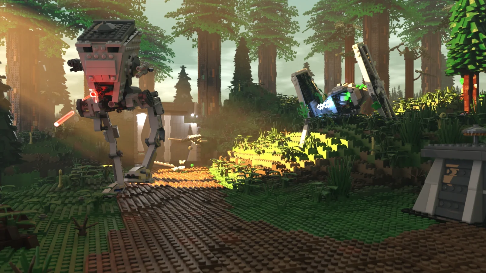

Animation 3D d'une route en boucle à l'infini
Projet étudiant / 2025
Animation 3D / Création Environnement
Réalisé en solo au Cégep Édouard-Montpetit, ce projet est une animation 3D relevant le défi technique d'un circuit en boucle infinie sur Blender. Le projet met en scène une bataille Lego Star Wars sur Endor entre les deux personnages les plus iconiques de la saga.
Crédits
Projet créatif non officiel. Les marques, modèles et droits appartiennent au Groupe LEGO et à Lucasfilm Ltd.
Rôle
Mise en scène, animation figurines éclairage et rendu final.
Usage d'IA
Le projet a été réalisé sans IA. J'ai utilisé Claude pour reformuler et structurer les textes de cette fiche.
Capture d’écran de l’environnement

